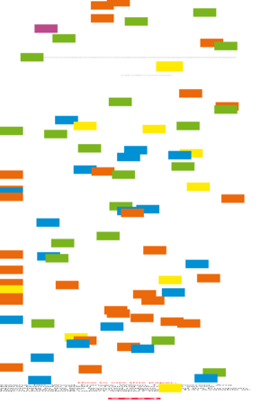
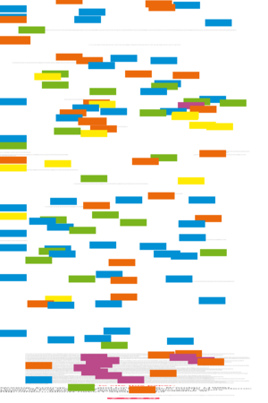
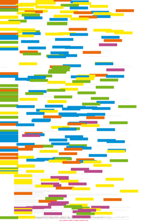

| About IR |
| Editors |
| Author instructions |
| Copyright |
| Author index |
| Subject index |
| Search |
| Reviews |
| Register |
| Home |

Volume 1 No 3 March 1996
Information Research: an electronic journal, is published three times a year by Professor T.D. Wilson of the Department of Information Studies, University of Sheffield.
Contents

Training information services specialists
in the less-favoured regions of the European Union (TRAIN-ISS)
Ian Owens, Frances Wood, Tom Wilson and Ana Maria Ramalho Correia
Investigating the management information needs of academic heads of departments: a critical success factors approach
Francis Greene and Brendan Loughridge
Total quality management, British Standard accreditation, Investors in People and academic libraries
V. Mistry and Bob Usherwood
Information Research is designed, maintained and published by by Professor Tom Wilson. Design and editorial content © T.D. Wilson, 1995-97